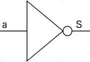
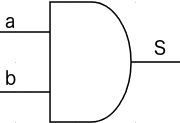
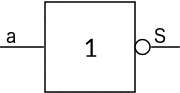
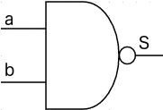
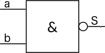
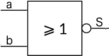
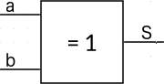
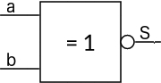

Cours
Contexte
On rencontre des booléens dans diverses situations quotidiennes :
- un interrupteur (ouvert / fermé),
- un jeter de pièce de monnaie (pile / face)
- ...
Définition
Un booléen est un type de variable à deux états, muni des opérations ET, OU, NON.
Ce sujet est à la confluence de 3 domaines : électronique, logique et informatique. D'où des notations diverses pour cette notion.
Notation
| Représentation | ||||||
|---|---|---|---|---|---|---|
| Français | Électronique | Logique | Ensembliste | Python | ||
| Etat | Etat Haut | Vrai | ⊤ | 1 | 1 | True |
| Etat Bas | Faux | ⊥ | 0 | 0 | False | |
| Opérations | NON | NON |  | ¬a | a | not |
| ET | ET |  | a . b | a ∧ b | and | |
| OU | OU |  | a + b | a ∨ b | or | |
Table de vérité
On représente l'ensemble valeurs d'entrées et sorties par une table de vérité. A chaque variable d'entrée correspond une colonne, et chaque ligne, une valeur d'état possible. Une colonne de sortie contient la valeur de l'état de l'opération.
Opérateur NON
| Représentation | ||
|---|---|---|
| Américain | Européen | Signe mathématique |
|  | ¬a | |
| Entrée | Sortie |
|---|---|
| a | S = ¬a |
| 0 | 1 |
| 1 | 0 |
Opérateur ET (AND)
| Entrée | Sortie | |
|---|---|---|
| a | b | S = a ∧ b |
| 0 | 0 | 0 |
| 0 | 1 | 0 |
| 1 | 0 | 0 |
| 1 | 1 | 1 |
Opérateur OU (OR)
| Entrée | Sortie | |
|---|---|---|
| a | b | S = a ∨ b |
| 0 | 0 | 0 |
| 0 | 1 | 1 |
| 1 | 0 | 1 |
| 1 | 1 | 1 |
À partir de ces 3 opérateurs, il est possible d'en décrire d'autres.
Écrire les tables de vérité des opérateurs suivants :
| Opérateur | Représentation | ||
|---|---|---|---|
| International | Français | Signe mathématique | |
| NON ET (NAND) |  |  | \(¬(a ∧b)\) |
| NON OU (NOR) |  |  | \(¬(a∨b)\) |
| OU EXCLUSIF (XOR) |  |  | \(a \oplus b\) |
| NON OU EXCLUSIF (XNOR) |  |  | \(¬(a \oplus b)\) |
S = ¬(a ∧ b)
| a | b | (a ∧ b) | ¬(a ∧ b) |
|---|---|---|---|
| 0 | 0 | 0 | 1 |
| 0 | 1 | 0 | 1 |
| 1 | 0 | 0 | 1 |
| 1 | 1 | 1 | 0 |
S = ¬(a ∨ b)
| a | b | (a ∨ b) | ¬(a ∨ b) |
|---|---|---|---|
| 0 | 0 | 0 | 1 |
| 0 | 1 | 1 | 0 |
| 1 | 0 | 1 | 0 |
| 1 | 1 | 1 | 0 |
S = a ⊕ b
| a | b | a ⊕ b |
|---|---|---|
| 0 | 0 | 0 |
| 0 | 1 | 1 |
| 1 | 0 | 1 |
| 1 | 1 | 0 |
S = ¬(a ⊕ b)
| a | b | a ⊕ b | ¬(a ⊕ b) |
|---|---|---|---|
| 0 | 0 | 0 | 1 |
| 0 | 1 | 1 | 0 |
| 1 | 0 | 1 | 0 |
| 1 | 1 | 0 | 1 |
Propriétés
Les opérateurs suivent plusieurs propriétés communes:
- Associativité : Comme avec les opérations habituelles, certaines parenthèses sont inutiles. Exemple : \(( a ∧ b ) ∧ c = a ∧ (b ∧ c) = a ∧ b ∧ c\)
- Commutativité : L'ordre est sans importance. Exemple : \(a ∧ b = b ∧ a\)
- Distributivité : Exemple : \(a ∨ ( b ∧ c ) = ( a ∨ b ) ∧ ( a ∨ c )\)
- Idempotence : Exemple : \(a ∧ a ∧ a ∧ [...] ∧ a = a\)
Expressions booléennes
À l’aide de l'ensemble des opérateurs vus ci-dessus, on peut construire des expressions ou fonctions, que l'on évalue en établissant sa table de vérité.
Exemple : \(S(a, b) = \mbox{ NOT }(a \mbox{ AND }b)\)
| Entrée | Sortie | ||
|---|---|---|---|
| a | b | S1 = a AND b | S = NOT(S1) |
| 0 | 0 | 0 | 1 |
| 0 | 1 | 0 | 1 |
| 1 | 0 | 0 | 1 |
| 1 | 1 | 1 | 0 |
Exercices
Établir des tables de vérité
Écrire les tables de vérité des expressions booléennes suivantes :
- S(a, b) = (NOT(a) AND b)
- S(a, b) = b OR (a AND b)
- S(a, b) = a AND (a OR b)
- S(a, b, c) = (NOT(a) AND b) OR (a AND c)
- Communication = Émetteur ET Récepteur
- Décrocher = (Sonnerie ET Décision de répondre) OU décision d'appeler
- Bac = Avoir la moyenne OU (NON Avoir la moyenne ET rattrapage)
S(a, b) = (NOT(a) AND b)
| a | b | NOT(a) | NOT(a) AND b |
|---|---|---|---|
| 0 | 0 | 1 | 0 |
| 0 | 1 | 1 | 1 |
| 1 | 0 | 0 | 0 |
| 1 | 1 | 0 | 0 |
S(a, b) = b OR (a AND b)
| a | b | a AND b | b OR (a AND b) |
|---|---|---|---|
| 0 | 0 | 0 | 0 |
| 0 | 1 | 0 | 1 |
| 1 | 0 | 0 | 0 |
| 1 | 1 | 1 | 1 |
S(a, b) = a AND (a OR b)
| a | b | a OR b | a AND (a OR b) |
|---|---|---|---|
| 0 | 0 | 0 | 0 |
| 0 | 1 | 1 | 0 |
| 1 | 0 | 1 | 1 |
| 1 | 1 | 1 | 1 |
S(a, b, c) = (NOT(a) AND b) OR (a AND c)
| a | b | c | NOT(a) | S1 = NOT(a) AND b | S2 = a AND c | S1 OR S2 |
|---|---|---|---|---|---|---|
| 0 | 0 | 0 | 1 | 0 | 0 | 0 |
| 0 | 0 | 1 | 1 | 0 | 0 | 0 |
| 0 | 1 | 0 | 1 | 1 | 0 | 1 |
| 0 | 1 | 1 | 1 | 1 | 0 | 1 |
| 1 | 0 | 0 | 0 | 0 | 0 | 0 |
| 1 | 0 | 1 | 0 | 0 | 1 | 1 |
| 1 | 1 | 0 | 0 | 0 | 0 | 0 |
| 1 | 1 | 1 | 0 | 0 | 1 | 1 |
Communication = Émetteur ET Récepteur
| Émetteur | Récepteur | Communication |
|---|---|---|
| 0 | 0 | 0 |
| 0 | 1 | 0 |
| 1 | 0 | 0 |
| 1 | 1 | 1 |
Décrocher = (Sonnerie ET Décision de répondre) OU décision d'appeler
| Sonnerie | Décision de répondre | décision d'appeler | (Sonnerie ET Décision de répondre) | Décrocher |
|---|---|---|---|---|
| 0 | 0 | 0 | 0 | 0 |
| 0 | 0 | 1 | 0 | 1 |
| 0 | 1 | 0 | 0 | 0 |
| 0 | 1 | 1 | 0 | 1 |
| 1 | 0 | 0 | 0 | 0 |
| 1 | 0 | 1 | 0 | 1 |
| 1 | 1 | 0 | 1 | 1 |
| 1 | 1 | 1 | 1 | 1 |
Bac = Avoir la moyenne OU (NON Avoir la moyenne ET rattrapage)
| Avoir la moyenne | Non Avoir la moyenne | rattrapage | (NON Avoir la moyenne ET rattrapage) | Bac |
|---|---|---|---|---|
| 0 | 1 | 0 | 0 | 0 |
| 0 | 1 | 1 | 1 | 1 |
| 1 | 0 | 0 | 0 | 1 |
| 1 | 0 | 1 | 0 | 1 |
Équivalence d'expressions booléennes
- Montrer que (a AND b) = NOT(NOT(a) OR NOT(b))
- Montrer que (a OR b) = NOT(NOT(a) AND NOT(b))
Deux expressions booléennes sont équivalentes si leurs tables de vérité le sont.
Autrement dit, si pour toutes les entrées des tables de vérité, l'ensemble des valeurs de sorties de ces mêmes tables sont équivalentes alors les expressions booléennes sont équivalentes.
| a | b | (a AND b) | NOT(a) | NOT(b) | NOT(a) OR NOT(b) | NOT(NOT(a) OR NOT(b)) |
|---|---|---|---|---|---|---|
| 0 | 0 | 0 | 1 | 1 | 1 | 0 |
| 0 | 1 | 0 | 1 | 0 | 1 | 0 |
| 1 | 0 | 0 | 0 | 1 | 1 | 0 |
| 1 | 1 | 1 | 0 | 0 | 0 | 1 |
| a | b | (a OR b) | NOT(a) | NOT(b) | NOT(a) AND NOT(b) | NOT(NOT(a) AND NOT(b)) |
|---|---|---|---|---|---|---|
| 0 | 0 | 0 | 1 | 1 | 1 | 0 |
| 0 | 1 | 1 | 1 | 0 | 0 | 1 |
| 1 | 0 | 1 | 0 | 1 | 0 | 1 |
| 1 | 1 | 1 | 0 | 0 | 0 | 1 |
Déterminer une expression booléenne
Trouver l'expression booléenne, notée ssi(a, b) à partir de sa table de vérité :
| a | b | ssi(a, b) |
|---|---|---|
| 0 | 0 | 1 |
| 0 | 1 | 0 |
| 1 | 0 | 0 |
| 1 | 1 | 1 |
| a | b | ssi(a, b) | S1 = a AND b | S2 = NOT(a) AND NOT(b) | ssi = S1 OR S2 | NOT(a ⊕ b) |
|---|---|---|---|---|---|---|
| 0 | 0 | 1 | 0 | 1 | 1 | 1 |
| 0 | 1 | 0 | 0 | 0 | 0 | 0 |
| 1 | 0 | 0 | 0 | 0 | 0 | 0 |
| 1 | 1 | 1 | 1 | 0 | 1 | 1 |
ssi(a, b) = (a AND b) OR (NOT(a) AND NOT(b)) = NOT(a ⊕ b)
Lois de De Morgan
- NON (a OU b) = NON a ET NON b
- NON (a ET b) = NON a OU NON b
Démontrer ces 2 formules
| a | b | a OU b | NON (a OU b) | NON a | NON b | NON a ET NON b |
|---|---|---|---|---|---|---|
| 0 | 0 | 0 | 1 | 1 | 1 | 1 |
| 0 | 1 | 1 | 0 | 1 | 0 | 0 |
| 1 | 0 | 1 | 0 | 0 | 1 | 0 |
| 1 | 1 | 1 | 0 | 0 | 0 | 0 |
| a | b | a ET b | NON (a ET b) | NON a | NON b | NON a OU NON b |
|---|---|---|---|---|---|---|
| 0 | 0 | 0 | 1 | 1 | 1 | 1 |
| 0 | 1 | 0 | 1 | 1 | 0 | 1 |
| 1 | 0 | 0 | 1 | 0 | 1 | 1 |
| 1 | 1 | 1 | 0 | 0 | 0 | 0 |